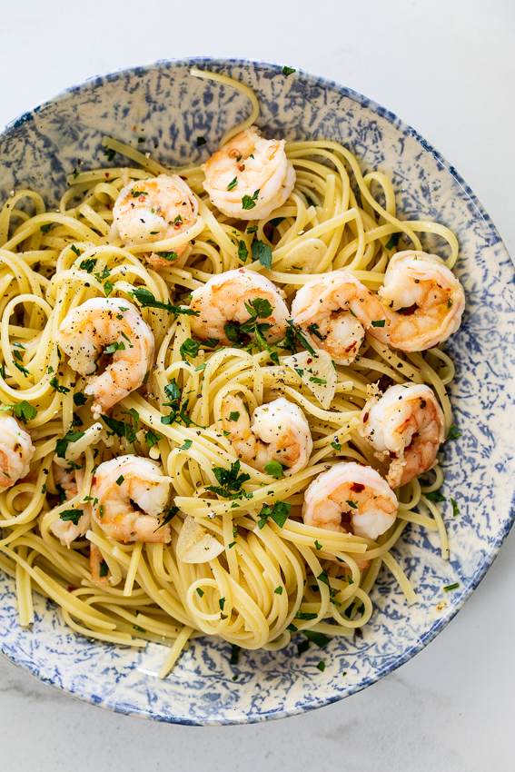

Aglio Olio

A simple and easy dish that can be whipped up even on a weekday evening.
Ingredients
- Shrimp
- Fresh garlic cloves
- Chilli flakes
- Parsley
- Pasta (spaghetti, linguine etc)
- Salt and black pepper
- Parmesan
Steps
- Bring a large pot of salted water to the boil. Add pasta of choice and cook until al dente.
Drain the pot but keep 1 cup of pasta water for later use.
- Add a few tablespoons of olive oil to a heated pan and allow for oil to be heated.
- Add garlic and fry till golden.
- Add dry shrimp, salt and pepper and cook until shrimp are pink and opaque.
- Remove from heat, stir in parsley and cooked pasta along with a scoop of pasta water.
- Serve with garnish of choice.
Home